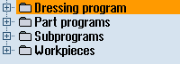
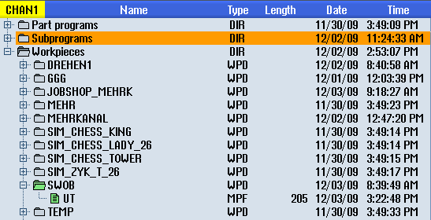

You can access programs at any time via the Program Manager for execution, editing, copying, or renaming.
Programs that you no longer require can be deleted to release their storage space.
| Notice |
Execution from USB flash driveDirect execution or simulation from a USB flash drive is not recommended. There is no protection against contact problems, falling out, breakage through knocking or unintentional removal of the USB flash drive during operation. Disconnecting it during operation will result in the stopping of the machining and thus to the workpiece being damaged. |
Storage for programs
Possible storage locations are:
-
NC
-
Local drive
-
Network drives
-
USB drives
-
FTP drives
-
V24
| | Software options To display the "Local drive", you require option "Additional HMI user memory on NCU memory card". |
Data exchange with other workstations
You have the following options for exchanging programs and data with other workstations:
USB drives (e.g. USB flash drive)
Network drives
FTP drive
Choosing storage locations
In the horizontal softkey bar, you can select the storage location that contains the directories and programs that you want to display. In addition to the "NC" softkey, via which the passive file system data can be displayed, additional softkeys can be displayed.
The "USB" softkey can only be used when an external storage medium is connected (e.g. USB flash drive on the USB port of the operator panel).
Displaying documents
You can display documents on all drives of the Program Manager (e.g. in the local drive or USB) and via the data tree of the system data. Various data formats are supported:
PDF
HTML
It is not possible to preview HTML documents.
Various graphic formats (e.g. BMP or JPEG)
DXF
| | Software options You require the "DXF reader" option in order to display DXF files. |
| Note |
FTP driveIt is not possible to preview documents on the FTP drive. |
Structure of the directories
In the overview, the icons in the left-hand column have the following meaning:
Directory | |
| | Program |
All directories have a plus sign when the Program Manager is called for the first time.
Program directory in the Program Manager
The plus sign in front of empty directories is removed after they have been read for the first time.
The directories and programs are always listed complete with the following information:
Name
The name can be a maximum of 24 characters long.
Permissible characters include all upper-case letters (without accents), digits, and underscores.
Type
Directory: DIR or WPD
Dressing program: DRS directory
Program: MPF
Subprogram: SPF
Initialization programs: INI
Job lists: JOB
Tool data: TOA
Magazine assignment: TMA
Zero points: UFR
R parameters: RPA
Global user data/definitions: GUD
Setting data: SEA
Protection areas: PRO
Sag: CEC
Size (in bytes)
Date/time (of creation or last change)
Active programs
Selected, i.e. active programs are identified using a green symbol.
Active program shown in green